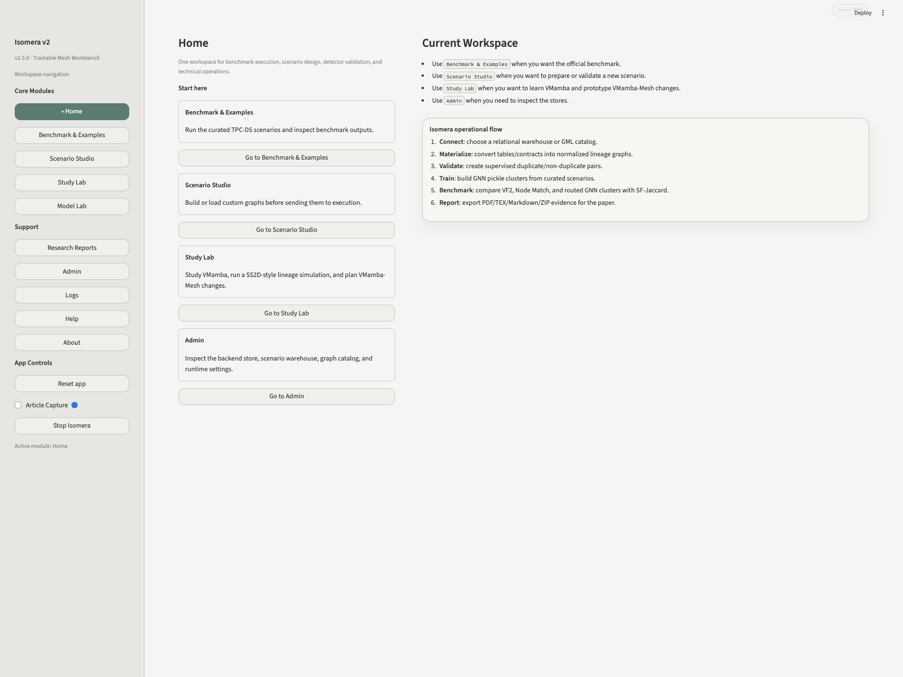
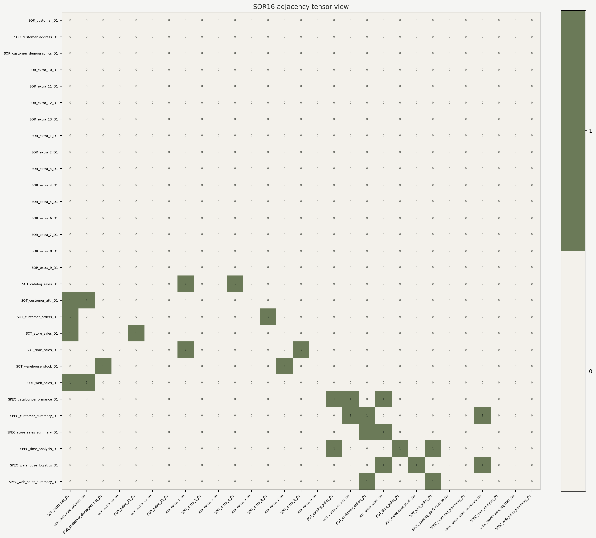
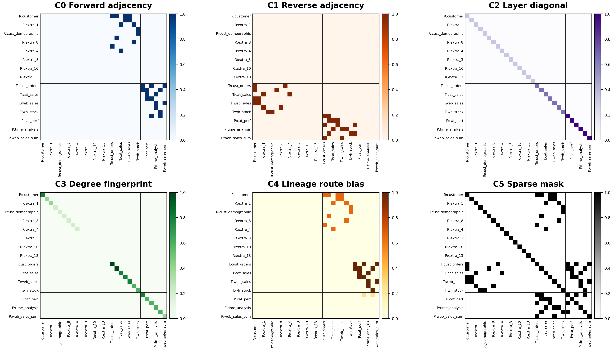
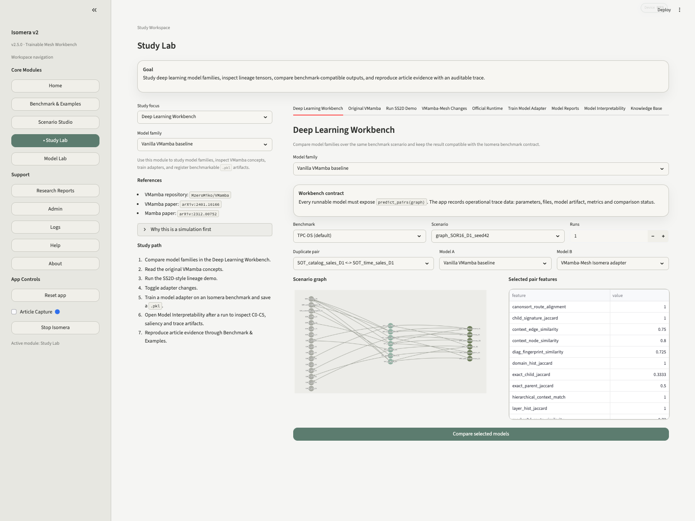
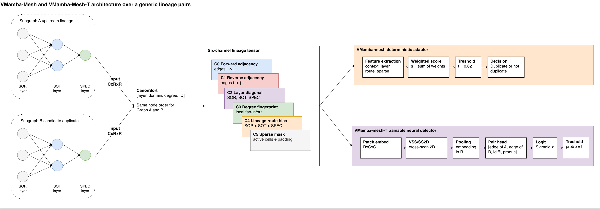
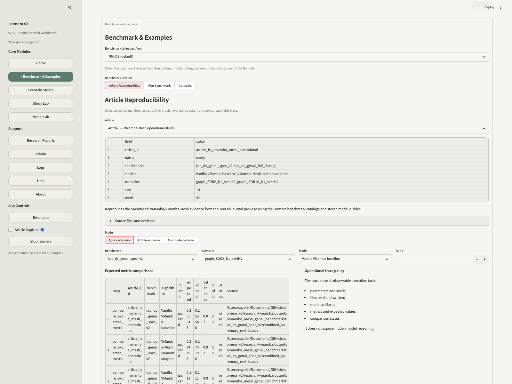
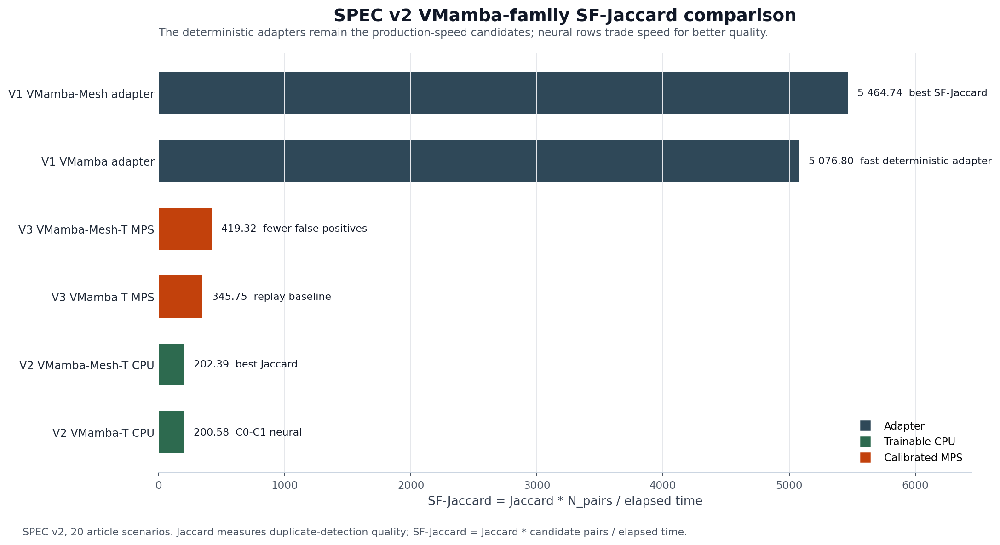

Uma leitura prática para entender o problema de tabelas duplicadas em arquiteturas de dados, abrir o Isomera, navegar por cada rota da ferramenta e reproduzir evidências com grafos, modelos, benchmarks, pickles, relatórios e interpretabilidade.
Ideia central: o Isomera transforma uma arquitetura de dados em grafo de linhagem, compara pares candidatos com VF2, Node Match, GNN/GIN, VMamba e VMamba-Mesh, e registra a evidência para auditoria e reprodução.

Tela inicial: ponto de entrada para benchmarks, criação de cenários, estudo de modelos, relatórios, administração e ajuda.
Da tabela ao grafo, do grafo ao tensor
Em Data Mesh, domínios diferentes podem criar tabelas equivalentes com nomes e caminhos diferentes. Por isso o problema não é só textual. O Isomera representa SOR, SOT e SPEC como nós de um grafo dirigido e usa as arestas para mostrar dependência: uma tabela nasceu de outra, agregou outra, filtrou outra ou produziu um produto semântico.
Grafo SOR16-D1 usado no estudo: nós SOR/SOT/SPEC e dependências dirigidas.

A mesma linhagem vista como matriz de adjacência canônica.
O VMamba-Mesh adiciona canais ao tensor para que o modelo não enxergue apenas zeros e arestas. C0 preserva adjacência direta, C1 adjacência reversa, C2 camada, C3 grau, C4 viés de rota de linhagem e C5 máscara de esparsidade.

Seis canais de entrada usados pela representação VMamba-Mesh.
Rotas principais dentro do app
Rota
Quando usar
O que observar
Home
Começar a navegação.
Resumo operacional e atalhos para módulos.
Benchmark & Examples
Executar e reproduzir benchmarks.
Conceitos, execução e Article Reproducibility.
Scenario Studio
Criar, carregar e validar cenários.
Fonte, geração, validação, treinamento e publicação.
Study Lab
Estudar VMamba/VMamba-Mesh e modelos treináveis.
Workbench, relatórios, interpretabilidade e KB.
Model Lab
Inspecionar pickles e roteamento.
Famílias registradas, artefatos e cobertura por cenário.
Research Reports
Ler pacotes gerados.
Markdown, PDF, manifest, ZIP e evidências.
Admin
Ver estado técnico do backend.
Backend, warehouse, Neo4j e settings.
Logs
Auditar execução.
Session log e terminal logs.
Help
Usar apresentação e docs internas.
VMamba-Mesh Presentation e Tech Docs.
Modelos, treino e interpretabilidade
No Study Lab, a rota Deep Learning Workbench permite comparar famílias de modelos em um cenário e par específico. O contrato prático é sempre o mesmo: o modelo precisa receber evidência do grafo e retornar pares previstos, scores e rastros compatíveis com benchmark.

Deep Learning Workbench: seleção de benchmark, cenário, par duplicado e modelos A/B.
Determinísticos
VF2, Node Match e VMamba-Mesh adapter servem como baselines auditáveis e rápidos.
Neurais
GNN/GIN, VMamba-T e VMamba-Mesh-T usam artefatos treináveis e podem ser roteados por benchmark.
Explicáveis
Model Interpretability mostra grafo, matriz, canais, score, threshold e saliency quando o checkpoint permite.

Arquitetura operacional: adapter determinístico e caminho treinável VMamba-Mesh-T.
Benchmarks, relatórios e reprodução
A rota Benchmark & Examples reúne conceitos, execução e Article Reproducibility. Ali o usuário escolhe benchmark, modo, cenário, modelo e número de runs. O app registra parâmetros, arquivos, métricas e comparação com valores esperados.

Article Reproducibility: manifesto, benchmark, modo rápido/artigo e política de trace.

Jaccard mede qualidade dos pares duplicados identificados. SF-Jaccard combina acerto e tempo, ou seja, ajuda a decidir se um detector é útil para varrer muitos candidatos em uma operação real.